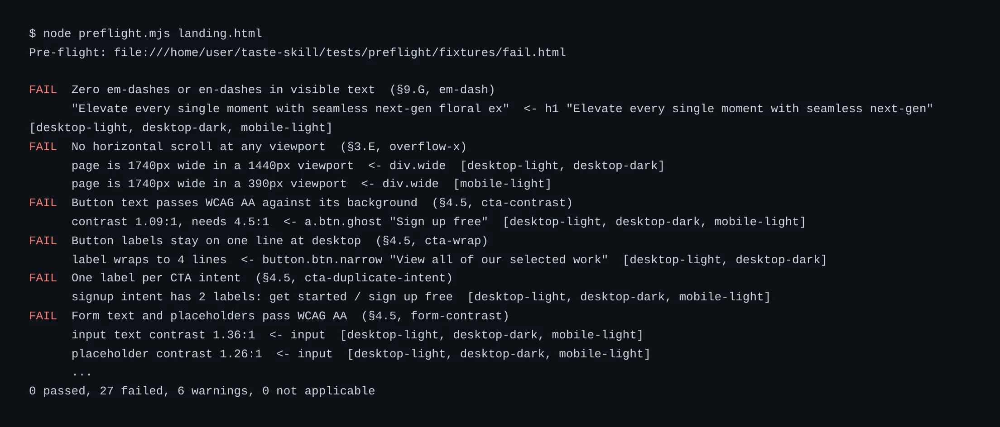
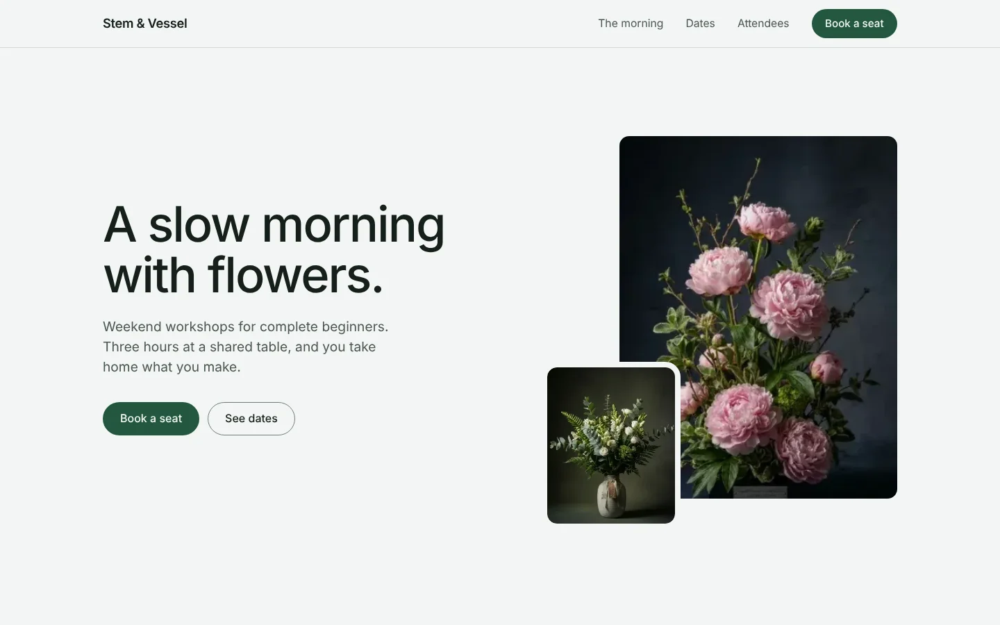

Contrast on buttons and forms
Button labels, input text and placeholders must pass WCAG AA against their real background.
FAIL contrast 1.09:1, needs 4.5:1
<- a.btn.ghost "Sign up free"
Preflight checks any URL or HTML file against 33 design and accessibility rules, then fails CI when one breaks.

Every page is rendered at desktop light, desktop dark and mobile light. Each failure names the element that caused it.
Button labels, input text and placeholders must pass WCAG AA against their real background.
FAIL contrast 1.09:1, needs 4.5:1
<- a.btn.ghost "Sign up free"
Headline, subtext and call to action have to be visible before anyone scrolls.

An element wider than the viewport fails the check, and the report says which one.
Patterns that make a page look generated get flagged.
The same rules run again with the dark color scheme, so a contrast fix in light mode cannot break dark mode unnoticed.
Animations have to respect the visitor's reduced-motion setting.
Give it a local HTML file or a URL, such as a staging deploy.
node preflight.mjs landing.htmlIt renders the page in light, dark and mobile views and runs every rule in each one.
...
0 passed, 27 failed, 6 warnings, 0 not applicableWhen a hard rule breaks, the command exits with an error and your CI build fails.
# in your CI workflow
- run: node preflight.mjs dist/index.htmlPrivate repositories pay per repo. Both plans get the same rules and the same CI gate.
For any public repository.
For product and marketing sites that live in a private repository.
Point it at the landing page you are about to ship and see which rules it breaks.
node preflight.mjs your-page.html